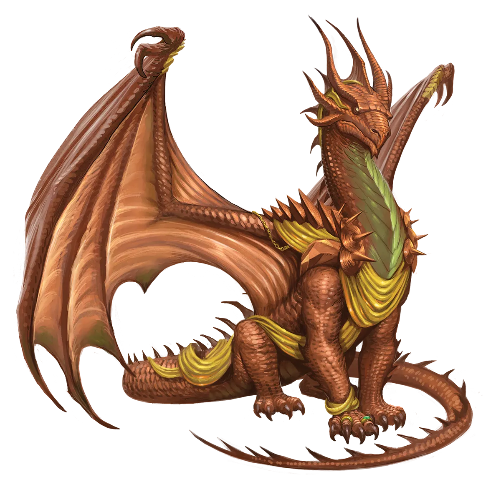
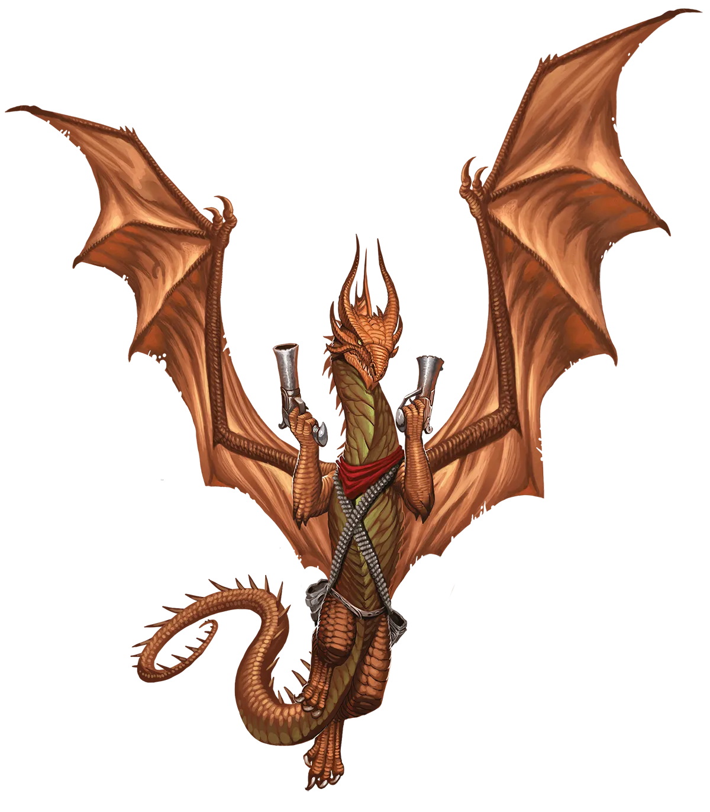

赤铜恶作剧
赤铜龙的幽默感因龙而异。有的复杂且真正有趣，有的则幼稚可笑。极光永恒赤铜龙自有其不同的风格。有些倾向于复杂的恶作剧，在铺垫期后产生更深刻的幽默，其轨迹与极光永恒仪式相呼应。另一些则活在当下，所施的恶作剧完全围绕着迅速且轻松的逗乐而进行。后一种形式的恶作剧让许多人（包括我在内）感到厌烦。然而，偏爱这些恶作剧的极光永恒赤铜龙相信，它们体现了永光龙快节奏的生活方式。
赤铜龙 Copper Dragon |
|
|
赤铜龙是反复无常的欺诈魔，以其独特且有时令人震惊的幽默感而闻名。此外，它们还热爱享受生活中更为精致的事物，沉迷于最美味的风味，体验最强烈的快感，并使自己周遭环绕着最精良的宝藏。尽管这可能让人以为赤铜龙轻浮善变，会在一时兴起之下就做出改变人生的决定，但事实是，赤铜龙不会仓促下结论或做选择。相反，它们在做重大决定前，会停下来审视每一个可能的角度。虽然它们追求享乐和恶作剧的天性很少会将它们引向极光永恒仪式，但赤铜龙偶尔仍会参与该仪式，以使自己或他人摆脱无法治愈的顽疾。传统的赤铜龙尊重其他赤铜龙做出自己选择的自由，包括是否进行极光永恒仪式的决定。至多，传统的赤铜龙可能会在永光龙的防御减弱时，趁机施展一系列轻松的恶作剧。在这种情况下，恶作剧是投机性的，并非出于任何想要趁机贬损仪式弊端的意图。而且更重要的是，当永恒赤铜龙的力量凌驾于传统者之上时，传统者也期望自己反过来会被恶作剧。 极光永恒赤铜龙会踏上冒险之旅，以测试其法术新适应性的极限，为他人的自由而战，并为自己赢得更广阔的舞台来施展恶作剧。它们常常加入冒险队伍，在日常中扮演欺诈魔或喜剧调剂的角色。因此，对赤铜龙来说，加入一个成员们具有良好幽默感（至少能够容忍巨龙搞笑举动）的队伍至关重要。虽然赤铜龙的恶作剧意在逗趣且最终往往无害，但那些不喜欢这类玩笑的人可能会感到被冒犯，从而导致团队内部关系紧张。赤铜龙与其他龙类结伴冒险的可能性并没有特别高或低，它们喜欢与精力充沛且热爱乐趣的种族共度时光，例如侏儒，以及与妖精恶作剧者相伴，例如皮克精和德拉西。当赤铜龙拥有几种选择时，它们更倾向于加入那些推动自由事业、反抗暴政、奴役以及对周围人施加不受欢迎限制之人的队伍，以尽情满足自己的热忱。尽管通常态度轻松愉悦，但赤铜龙对周围的不公正会激起极大的愤怒。因此，它们常常选择吟游诗人和游荡者等有助于恶作剧和享乐的职业，但也有少数赤铜龙成为野蛮人，掌握那股激情的怒火，并将其引导至战斗造诣。 赤铜恶作剧 赤铜龙的幽默感因龙而异。有的复杂且真正有趣，有的则幼稚可笑。极光永恒赤铜龙自有其不同的风格。有些倾向于复杂的恶作剧，在铺垫期后产生更深刻的幽默，其轨迹与极光永恒仪式相呼应。另一些则活在当下，所施的恶作剧完全围绕着迅速且轻松的逗乐而进行。后一种形式的恶作剧让许多人（包括我在内）感到厌烦。然而，偏爱这些恶作剧的极光永恒赤铜龙相信，它们体现了永光龙快节奏的生活方式。 赤铜龙特质 Copper Dragon Traits 你出身于一脉机智诙谐、喜爱恶作剧且富于同情心的享乐派赤铜龙世系。 |
  |